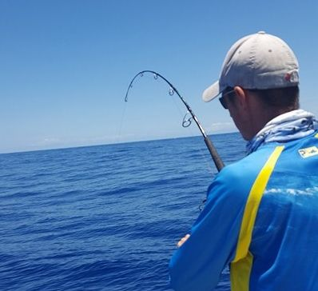

Technique ProJigging vertical
Le jigging consiste à animer des leurres métalliques (jigs) en les faisant monter et descendre dans la colonne d'eau. Technique redoutablement efficace pour cibler les prédateurs des fonds rocheux et des tombants.
Mérou
Carangue
Thon jaune
Vivaneaux
Réserver cette sortie →